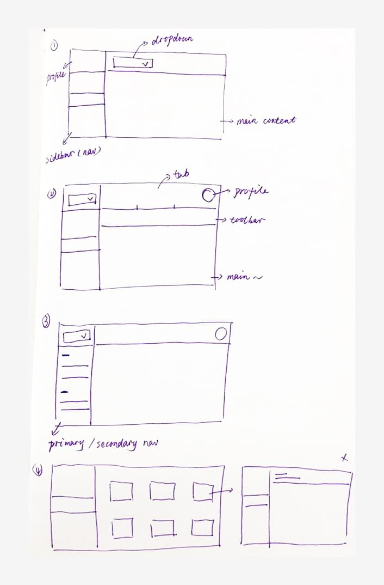
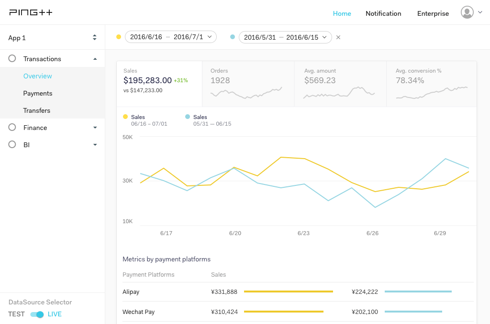

加入 Ping++ 之后，我开始负责 Ping++ Dashboard 的再设计。一是原先的版本交互逻辑上存在诸多问题，二是后续产品功能升级，原先的框架布局已经不再适用。
用了几天时间了解业务相关内容之后，我和产品部门一起讨论定义了新版 Dashboard 的大致方向 - 考虑到需要重组已有模块和新的产品功能，我们决定完全重新设计。另外，除了业务本身，还要结合考虑销售部门从客户那里获得的反馈，加上整个项目排期比较紧，整个项目还是比较有挑战的。
框架布局
对于这一点，当时我考虑的几个点包括：可拓展（后续产品业务的升级），够直接，善用成熟的交互模式。以下是页面布局的一些方案草稿。

最终定稿如下。

面板
从右侧滑入的面板是整个 Dashboard 中用得较多且起了关键作用的内容组件。多数时候，它是对现在页面信息的补充，而且不像弹窗打断性那么强（我们在其他地方使用了弹窗），用户可以很容易地进入和退出面板。另外，浏览面板内容的同时，不会丢失信息焦点 - 你会知道当前在看的是哪块内容的信息补充。

设计规范
因为这是一次完全重新设计，所以同样需要重新定义设计规范。整个过程很有玩，因为既要保证和官网的品牌形象保持一致，也是一次从零开始搭建视觉和交互规范。
幸运的是，已有的官网品牌设计规范帮了我大忙，让我知道从哪里开始入手，比如字体，颜色等等。
字体和颜色

UI 控件

总结
回顾当时的整个过程，尽管我觉得整个团队，从产品到开发再到测试上线，做得已经比较不错，但是仍然有可以改善的地方。例如我在设计的时候应该多考虑开发技术的局限性，毕竟有时间限制，快速上线去验证产品才是当时最重要的事情。